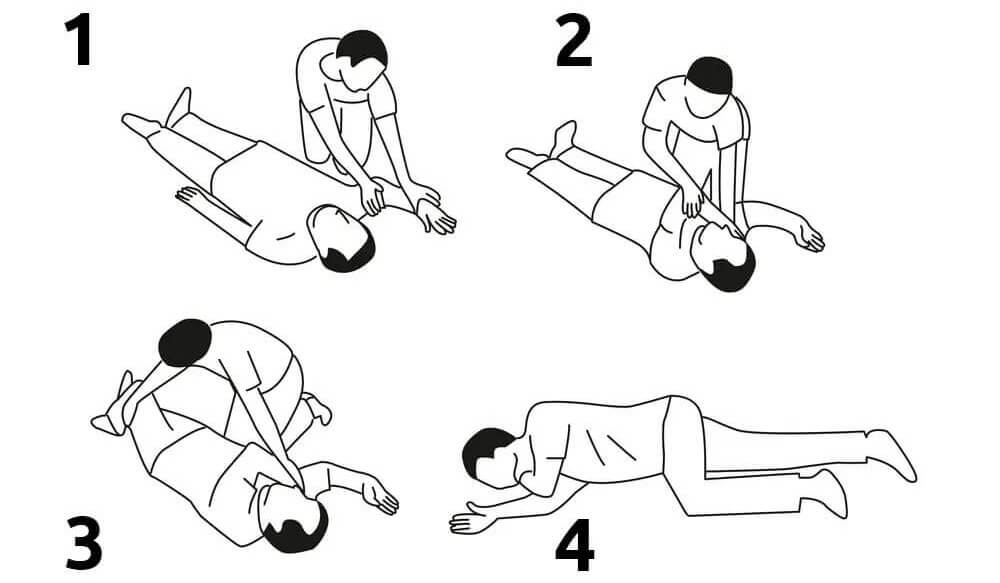

ACLS Instructor · Chapter 3
成人基本救命術Adult Basic Life Support
高品質 CPR、AED、復甦姿勢、異物哽塞
講師：台北市立聯合醫院陽明院區 急診主治醫師 懷顥
原著：胡勝川、吳孟諭、楊久滕、施美秀〈第 3 章 成人基本救命術〉
開場：BLS 是 ACLS 的地基，病人要先得到高品質 CPR，後面的 ACLS 才有機會。這份投影片以教科書第 3 章為骨架，建議等級與 2025 AHA Part 7 Adult BLS 對照過。BLS 站採 3D 教學：Describe 講解 → Demo 示範 → Do 大部分時間讓學員操作，講師從旁糾正。
Roadmap
本章地圖
⑤ 特殊情況 鴉片過量、肥胖 替代技術、ECLS 溺水・低體溫・孕婦
圖例：Class 1 建議 2a 合理 2b 可考慮 3 無益／有害 NEW 2025
Why it matters · 猜猜看
猜猜看：心臟停止的現況點卡片揭曉・按 A 全部揭曉
美國院外心臟停止存活率 ？
?
10.5%
發生率 378.7／10 萬
▸ 點擊揭曉 院外心臟停止旁觀者 CPR ？
?
41.7%
不到一半
▸ 點擊揭曉 院內心臟停止存活率 ？
?
23.6%
約院外兩倍
▸ 點擊揭曉 公共場所目擊的 VF ，救活率 可以多高？
?
▸ 點擊揭曉
2025 AHA Part 1 Executive Summary；Pollack RA, et al. Circulation 2018;137:2104–13
先讓學員猜，再點開。重點對比：一般 OHCA 存活率只有一成，但目擊 VF 若能早期電擊，存活率可以到一半以上。VF 數據來自 ROC 登錄（2011–2015）：公共場所目擊、可電擊心律的 OHCA，旁觀者 AED 電擊者存活出院 66.5%（功能良好 57.1%），救護人員才電擊者 43.0%。
Why it matters
第一個在場的人最關鍵
旁觀者 CPR 的差距
目擊、有 旁觀者 CPR
目擊、沒有 旁觀者 CPR
存活率接近兩倍 ；公共場所高於住宅。
4–6 分鐘的黃金時段
0 4 6 10 分鐘
腦缺血 4–6 分鐘 永久損傷；119 常超過 4 分鐘才到，只有目擊者來得及 。
ACLS 精華第七版 第 3 章；2025 AHA Part 1 Executive Summary
有旁觀者 CPR 的存活率幾乎是沒有的兩倍（住宅 8.9%，公共場所較高），這就是推動全民 CPR 的理由。院外救護車到場時間常超過 4 分鐘，所以第一個在場的人最關鍵。
Chain of survival
統一的六環生存之鏈成人／兒童、院內／院外通用
演進 2010 四環＋復甦後照護整合成一條
為什麼要早期電擊 VF 每延遲 1 分鐘 電擊：
有人同時壓胸 ：救活率每分鐘才 下降
3–4%
沒有壓胸 ：救活率每分鐘下降
7–10%
→ 等 AED 時 CPR 不能停
ACLS 精華第七版 第 3 章 p.28；Dezfulian C, et al. Part 4: Systems of Care. Circulation 2025;152(suppl 2):S353–S384
2025 年把原本成人、兒童、院內、院外四條鏈合成一條，簡化教學。早期電擊這一格是本頁重點：電擊前有沒有人在壓胸，決定了每分鐘救活率掉多快。CPR 不能取代電擊，但能替電擊爭取時間。
Overcoming barriers
學了 CPR 卻不敢救？
⚖️ 怕法律糾紛 醫師法第 28 條：臨時施行急救除外 。
尚無因 CPR 被告成功的案例。一個人不會死兩次。
🦠 怕傳染病 機率極低；無因 CPR 感染 HIV 的病例。
可取得時使用 PPE2a
COVID-19 ：用單向閥面罩／面膜 ；醫療人員先穿 PPE （N95）
不可因此延誤壓胸
💪 自信心不足 先壓還是先吹？先救還是先叫？
記住一句口訣：
叫叫 CAB
ACLS 精華第七版 第 3 章；Edelson DP, et al. Circulation 2020;141:e933–e943（COVID-19 interim guidance）
心理建設是小組教學一開始就要講的。三個常見障礙：法律、傳染、信心。COVID-19 之後，口對口人工呼吸建議用單向閥面罩或面膜；醫療人員要先穿好 PPE 再處理，但民眾沒有防護時仍可做純壓胸 CPR。最大的障礙是信心，所以要把叫叫 CAB 練到反射動作。
02
心肺復甦術的技巧 叫叫 CAB(D)：流程 → 施救者 → 各口訣與實證
Algorithm · Healthcare provider · 圖 3-1
叫叫 CAB 流程圖（2025 成人，專業人員）
無呼吸／瀕死呼吸、無脈搏 AED 到達
可電擊 不可電擊 無脈搏
確認現場環境安全
叫 無反應 叫 呼叫旁人、手機啟動 EMS取得 AED 與急救設備（或請人去拿）
10 秒內同時看呼吸、摸脈搏
確定摸到脈搏？
呼吸正常、有脈搏 ：監測至救護抵達無正常呼吸、有脈搏
B 每 6 秒 1 次通氣（10 次/分）每 2 分鐘查脈搏
疑鴉片過量：給 Naloxone
C-A-B 開始 CPR 30:2
D AED 到就用・疑鴉片過量給 Naloxone分析心律：可電擊？
電擊 1 次
立即 CPR 約 2 分鐘（依 AED 指示）
立即 CPR 約 2 分鐘
每 2 分鐘分析心律
持續到 ALS 接手，或病人開始活動
ACLS 精華第七版 圖 3-1；2025 AHA Adult BLS Algorithm for Healthcare Providers
先用流程圖把叫叫 CAB(D) 串起來，後面每個口訣各一頁展開。關鍵分岔是 10 秒內的脈搏與呼吸評估（有無正常呼吸或瀕死呼吸）。有脈搏沒正常呼吸的，是呼吸停止，每 6 秒給一口氣（10 次/分），每 2 分鐘查脈搏，沒脈搏就開始 CPR。疑似鴉片過量的兩條路都要給 naloxone。
Sequence by rescuer · 表 3-1
不同施救者的急救順序
步驟 未受訓民眾 受過訓練的民眾 醫療人員 1 安全 確認現場安全 2 叫 拍雙肩、大聲呼喚 3 叫 求救、打 119（擴音留在旁邊） 打 119；指定一人 拿 AED 啟動急救小組（可在查脈搏後） 4 辨識 依派遣員指示 無呼吸或瀕死呼吸 ≤ 10 秒同時 查呼吸與脈搏5 CPR 派遣員指導純壓胸 30:2 ；不會給氣 → 純壓胸30:2 ；進階呼吸道 → 每 6 秒 1 口6 AED 依指示找 AED AED 到就用 雙人 CPR＋AED／電擊器
共同點 沒反應、沒正常呼吸 → 就壓 ；差別只在摸不摸脈搏、給不給氣。
ACLS 精華第七版 表 3-1（p.41）；2025 AHA Part 7 Adult BLS
這張表回答學員最常問的「我是民眾，要不要摸脈搏、要不要吹氣」。未受訓的民眾聽 119 派遣員指示純壓胸；受過訓練的民眾做 30:2；醫療人員多了同時檢查脈搏與呼吸、啟動急救小組。
叫 · 確認意識
叫：確認反應、辨識心臟停止
做法 確認安全，原則上原地 CPR 跪於病人一側，雙膝與肩同寬 輕拍雙肩 ：「你還好嗎？」 無反應 → 看胸腹起伏；醫療人員同時摸頸動脈 判斷 民眾：無反應＋無呼吸／瀕死呼吸 → 當作心臟停止 1 同時查 ≤ 10 秒 1 ；摸不到明確脈搏 → CPR
實證：瀕死呼吸 緩慢不規則的喘氣，屬無效呼吸 ；見於 40–60% OHCA，是誤判最常見原因。抽搐也可能是心臟停止。
實證：脈搏不可靠 醫護也常摸錯、摸太久。頸動脈：甲狀軟骨滑入胸鎖乳突肌凹溝，數「一千零一…一千零七」。民眾不需摸脈搏 。
ACLS 精華第七版 第 3 章；2025 AHA Part 7 Adult BLS
脈搏很難摸，連醫護人員也常判斷錯，所以 10 秒內摸不到明確脈搏就開始壓。瀕死呼吸是最大陷阱，請學員記住：喘氣不等於呼吸。
叫 · Carotid pulse
頸動脈脈搏的位置
1
2
3
甲狀軟骨（喉結）
環狀軟骨
胸鎖乳突肌
觸摸點
喉結旁、胸鎖乳突肌 前緣的凹溝
圖例 1 總頸動脈 2 內頸動脈 3 外頸動脈● 觸摸點：甲狀軟骨高度 ，總頸動脈分叉之下
食指、中指找到喉結
往施救者這側 滑 2–3 cm
落入氣管與胸鎖乳突肌 之間的凹溝，輕壓
同時看呼吸，數「一千零一…一千零七」，≤ 10 秒
不要 同時壓兩側・用拇指摸・壓太用力
ACLS 精華第七版 第 3 章；示意圖依頸部體表解剖重繪
頸動脈在甲狀軟骨高度最容易摸到：先找到喉結，往施救者這一側滑進氣管和胸鎖乳突肌之間的凹溝。總頸動脈大約在甲狀軟骨上緣分成內、外頸動脈，所以觸摸點在分叉下方。不要同時按兩側，以免減少腦部血流；拇指本身有脈搏，容易誤判；壓太用力會把脈搏壓掉。10 秒內摸不到明確脈搏就開始 CPR。
叫 · 求救
叫：立即求救、取得 AED
揮手、指定一人 ：「請你打 119，拿 AED！」
沒人 → 自己打 119，開擴音 邊打邊做
聽從派遣員指導 CPR
擺成仰臥，創傷注意頸椎
其他工具 「全民守護者 APP」通知附近志工帶 AED。
先救還是先叫？ 成人：先叫再救 1 同時 求救與 CPR1
例外：先救 2 分鐘再叫 溺水、創傷、藥物中毒、異物；嬰兒與兒童
實證 成人多為 VF，關鍵是電擊時間 ；派遣員指導可提高旁觀者 CPR 與存活。
ACLS 精華第七版 第 3 章；2025 AHA Part 7 Adult BLS、Part 4 Systems of Care
教學重點是「指定一人」，對著特定的人講，否則旁觀者效應會讓大家都以為別人會打。手機擴音可以讓單人施救者同時求救和壓胸。成人先叫是因為成人多為 VF，需要早期電擊；溺水、兒童多為窒息性（非心因性），先做 2 分鐘 CPR。
C · Circulation
C：按壓位置與姿勢
胸部中央、胸骨下半段 1
掌根相疊、十指交扣，下方手指翹起
手肘打直，肩在胸骨正上方，垂直下壓
可用慣用手 貼胸骨2b
答數「一下、二下…十一、十二…」
NEW 2025 病人與施救者的位置軀幹約在施救者膝部高度 1 原地進行 1 堅硬平面＋仰臥 2a
實證 跪姿深度優於站姿；胸骨下 1/3 動脈壓與 EtCO₂ 較高。41% OHCA 因搬動而延遲 CPR，存活較低。
俯臥 無法翻成仰臥時可考慮俯臥 CPR2b
ACLS 精華第七版 第 3 章；2025 AHA Part 7 Adult BLS
手放在乳頭連線下方可能壓到劍突，效果較差，所以用「胸骨下半段」描述（目測，不需脫衣）。2025 年新強調病人高度要在施救者膝部附近，病床上要降床或站踏台。不要為了搬到地板而延遲開始壓胸。
C · High-quality CPR
C：高品質 CPR 的六個數字
100–120 次/分
速率；30 下約 15–18 秒2a
≥60 % CCF
壓胸分率2b ；好團隊 > 80%
回饋裝置 即時回饋優化 CPR 品質2a
第六項 勿過度通氣。
2025 AHA Part 7 Adult BLS
這頁是整章最重要的一頁。速率、深度、回彈、中斷、壓胸分率、換手時間，六個數字要背起來。壓：放約 50:50（2b）。深度超過 6 公分反而降低存活。90 到 120 秒後深度就開始下降，即使施救者自己不覺得累，所以兩分鐘一定要換。
C · 實證：Physiology
C 的實證：CPR 為什麼能產生血流？
心臟幫浦 Cardiac pump 直接擠壓心臟。可能較適用於瘦小者
胸腔幫浦 Thoracic pump 胸內壓上升，血液由高壓流向低壓。目前支持者較多
為什麼要少中斷 一停壓，冠狀動脈灌流壓立即歸零 ，要好幾下才回升。
ACLS 精華第七版 第 3 章
兩種學說都有證據，可能跟體型有關。重點是 CPR 最多只能打出正常心輸出量的四分之一到三分之一，所以每一次中斷都很昂貴。
A · Airway
A：打開呼吸道
一般病人：壓額抬下巴 無頸椎疑慮時使用1 ；舌根與會厭是最常見的阻塞原因
NEW 2025 頭頸部創傷① 先推下顎 1 改壓額抬下巴 1 氧合優先於脊椎風險 徒手 固定，不用硬式頸圈 3: Harm
建議 等級 無嘔吐反射時可用口咽／鼻咽呼吸道 2b 疑顱底骨折、凝血異常：用口咽 2a 常規環狀軟骨按壓 3: No Benefit
口內異物 不需常規檢查口腔 ；異物哽塞者看得到才取。
2025 AHA Part 7 Adult BLS
2025 的重要改變：創傷病人推下顎（加輔助器）打不開，就用壓額抬下巴，因為打不開呼吸道比頸椎移動更致命。非專業施救者不要用硬式頸圈，可能讓通氣更困難。
B · Breathing
B：人工呼吸與通氣比
口對口 捏鼻、抬下巴；吹 1 秒，看胸部 ；胸部落下再吹第 2 口；無起伏先重新打開呼吸道
袋瓣面罩 BVM 兩人 操作：一人雙手密合，一人擠球2a ；雙手優於單手 E-C；用成人 面罩
替代途徑 口不能用 → 口對鼻 2a 兒科圓面罩 2b
情境 做法 等級 無進階呼吸道 30:2 ，每口 1 秒2a 有進階呼吸道 持續壓胸，每 6 秒 1 口 2a 有脈搏、呼吸停止 每 6 秒 1 口 ，見胸部起伏；每 2 分鐘查脈搏2a 無進階呼吸道，專業人員 可考慮連續壓胸＋非同步通氣 2b
2025 AHA Part 7 Adult BLS
BVM 單人很難做好，兩人雙手密合（配合推下顎）的效果最好。兒科面罩用在成人容易漏氣。口袋面罩比面膜式防護片有效。30:2 的好處是暫停時可以看到胸部起伏，確認通氣有效。
B · 實證：Ventilation physiology
B 的實證：為什麼不用給太多、太快？
① 為什麼要給氣 → 氧合 呼出氣含氧 16–17%，有給總比沒給好 。只壓不吹，血氧會逐漸下降，窒息性心臟停止尤其明顯。
② 給多少 → 由 CO₂ 決定 CPR 時肺血流只剩 25–33%，送回肺的 CO₂ 很少 → 較少的通氣就足夠；EtCO₂ 也因此偏低。
目標 潮氣量 500–600 mL 2a 看到胸部起伏即可 2a 1 秒 2b
過度通氣有害 · Class 3 胸內壓 ↑ → 靜脈回流 ↓ → 冠狀動脈灌流 ↓；胃脹氣 → 吸入。通氣不足、CO₂ 波動同樣與較差神經預後相關。
ACLS 精華第七版 第 3 章；2025 AHA Part 7 Adult BLS（Ventilation）
教科書原文用「V/Q 比」解釋為什麼通氣量可以比平常低，但要分清楚：給氣是為了氧合，給多少則由 CO₂ 清除決定。空氣含氧 21%，呼出氣仍有 16–17%。潮氣量 500–600 mL 約 6–7 mL/kg。CPR 時肺血流很低，送到肺的 CO₂ 很少，所以很少的通氣就夠。多給的氣只會增加胸內壓、減少靜脈回流。
D · Defibrillation
D：AED 操作與早期電擊
打開開關 貼上電擊片 插頭接主機 分析時勿碰病人
須電擊 → 自動充電 喊「大家都離開」 按電擊鈕 立即壓胸
公共場所設置 交通要衝、學校、集會、購物、旅宿、溫泉等。
AED 未到或準備時持續 CPR 1
貼片時不停壓 ，只在分析、電擊時暫停
電擊後立即壓胸 ，不查心律2a
院外 5 分鐘 、院內 3 分鐘 內電擊
實證 公共場所目擊 VF：旁觀者 AED 66.5% vs 救護人員電擊 43% ；救護車越晚到差距越大。
ACLS 精華第七版 第 3 章；2025 AHA Part 7 Adult BLS；Pollack RA, et al. Circulation 2018;137:2104–13
AED 到了就馬上用，貼片時壓胸不要停。電擊時喊「你離開、我離開、大家都離開」。電擊後不要看心律，直接壓 2 分鐘再依指示。實證這格可以回扣第一張的猜猜看。
D · Pads · CPR first? · Energy
D：貼片、先壓或先電、能量
貼片位置
前外側 或前後位 皆可直徑 > 8 cm 2a
可調整胸罩 不必移除2b
胸毛多：剃除或貼片拔毛
濕：擦乾；藥物貼片：撕除
植入裝置：避開 正上方
先壓還是先電？
目擊／監測中 VF 且電擊器在手 → 立即電擊 2a
未目擊：準備時持續 CPR，不需刻意先壓 1.5–3 分鐘
單次電擊 → CPR 2 分鐘頑固性 VF：換前後位或雙重電擊2b
能量
雙相波優於單相波2a
依廠商建議（120–200 J ）
不知道 → 最大能量 2b
之後可提高能量 2b
單相波 360 J
ACLS 精華第七版 第 3 章 p.48–53；2025 AHA Part 7 Adult BLS、Part 9 Adult ALS（Circulation 2025;152(suppl 2):S538–S577）
這頁偏向醫療人員。貼片前外側（右鎖骨下＋左腋中線心尖）或前後位都可以，重點是快速貼好、不中斷壓胸。頑固性 VF（≥ 3 次電擊）的換向電擊與雙重連續電擊，2025 AHA 仍給 2b、效益未確立；ILCOR 弱建議可考慮。能量：雙相波依廠商，不清楚就用最大，後續可升高；AED 自動決定能量，民眾不需設定。
Vascular access
給藥途徑：IV、IO、中心靜脈
周邊靜脈 IV 2025 首選 1
大條、近心端（肘前） 推 20 mL 生理食鹽水＋抬高肢體 10–20 秒 骨內注射 IO IV 失敗或無法建立 時2a
脛骨近端、肱骨近端 2025 ILCOR：IO 持續 ROSC 較低 中心靜脈 CVC 已有導管 → 可優先使用 ，最快到中樞循環
BLS 的角度 建立管路、給藥都不可中斷壓胸 。
2025 AHA Part 9 Adult ALS；AHA Top Things to Know: 2025 Guidelines for CPR and ECC
2020 年 IV 與 IO 被視為同等，2025 年改為 IV 優先、IO 為替代，依據是 2025 ILCOR 系統性回顧（含 3 個大型 RCT）顯示 IO 的持續 ROSC 較低。周邊給藥後推 20 mL 並抬高肢體，是讓藥物進入中樞循環的老觀念，仍適用。藥物再好也只能靠 CPR 送到心臟。
03
併發症與其他概念 常見錯誤・併發症・復甦姿勢・其他電治療
Common pitfalls
CPR 常見錯誤
環節 常見錯誤 叫 未拍雙肩；未指定一人 打 119、拿 AED A 下巴未確實抬起 C 偏到肋骨；手肘彎；太快或太慢；跳躍搖擺；未回彈；深度不夠 B 吹不進：後仰不夠 → 嘴沒蓋全 → 鼻沒捏 → 嘴被合攏；吹太用力；沒看胸部 節奏 2 分鐘做不完 5 個循環
胃脹氣 呼吸道不通、吹太快太用力所致。不影響呼吸可不理；影響呼吸 → 側臥 再壓出
ACLS 精華第七版 第 3 章
這張表可以當作操作評核的檢核表。其他常見錯誤：未揮手引起注意、答數不對。吹不進去時依序檢查：頭後仰、嘴密合、捏鼻、嘴有沒有被合攏。
Complications
CPR 的併發症：壓錯人會怎樣？
心臟停止病人 肋骨／胸骨骨折、肋軟骨分離、氣胸、血胸、肺挫傷、肝撕裂傷、脂肪栓塞。
壓太深、位置太低傷害增加。
仍以救命為優先
寧可壓錯，不可不壓
ACLS 精華第七版 第 3 章；2025 AHA Part 7 Adult BLS
民眾最怕「萬一他沒有心臟停止，我壓了會不會壓壞」。數據顯示對未心臟停止者壓胸的傷害非常低：不壓的代價是死亡，壓錯的代價多半是胸痛。深度超過 6 公分傷害增加；位置偏低容易壓到劍突與肝臟。
Recovery position
復甦姿勢有脈搏、呼吸，意識未恢復

圖片來源：Rusty〈朋友醉倒了該怎麼辦？尼古喵喵教你「復甦姿勢」的正確步驟〉，一飲樂酒誌（1shot.tw），2026/7/27
原則 · Class 2a 側臥、呼吸道通暢、不壓胸、易引流、穩固。
近側手直角： 靠近你的手與身體呈直角遠側手過胸： 手背貼近你側臉頰屈膝翻身： 遠側腳彎起，扶肩與臀往你翻調整： 上方腿弓箭步；臉枕手背；頭微後仰
⚠ 指引補充 只用於呼吸正常 者；瀕死呼吸或創傷不擺。持續監測呼吸 ，異常 → 翻回 CPR。
ACLS 精華第七版 第 3 章；ERC Guidelines 2025 First Aid
復甦姿勢的目的是防止舌根後倒和嘔吐吸入。標準姿勢沒有統一。教材的五步驟在這裡合成四步，對應圖的四格。ERC 2025 急救指引補充：瀕死呼吸或創傷不要擺復甦姿勢，擺好後要持續看呼吸，避免錯過心臟停止。
Other electrical / pseudo-electrical therapies
用於心臟停止的其他電治療或偽電治療
方法 建議 等級 心前區重擊 precordial thump 未目擊的心臟停止：不常規使用 3: No Benefit 目擊、監測中的不穩定 VT，電擊器未能立即可用 時可考慮；不可延誤 CPR 與電擊 2b 拳擊節律 percussion (fist) pacing 不常規使用 3: No Benefit 咳嗽 CPR cough CPR 導管室等監測中、清醒仰臥者，心律不整剛發生時，每 1–3 秒用力咳嗽；不可延誤 確切治療 2b 心律調節 pacing in cardiac arrest 心臟停止時不常規使用 3: No Benefit
重點 以上都不能取代 高品質 CPR 與電擊；ERC 2025 已不再列入心前區重擊。
ACLS 精華第七版 第 3 章；AHA 2020 Adult BLS & ALS（2025 未重新回顧者沿用）；ERC Guidelines 2025 Adult ALS
「偽電治療」指不使用電擊器、以機械方式試圖產生電刺激的方法，例如心前區重擊、拳擊節律，以及咳嗽 CPR。證據都很弱，重點是不能因此延誤 CPR 與電擊。2025 AHA 對未重新做證據回顧的題目沿用 2020 年建議；ERC 2025 ALS 指引已把心前區重擊移除。
04
呼吸道異物哽塞 FBAO 流程圖 → 清醒 → 失去意識 → 特殊情況
FBAO · Algorithm · 圖 3-2
2025 成人呼吸道異物哽塞流程
能 不能 惡化 否 是 疑似成人呼吸道異物哽塞：「你是不是嗆到了？」
能咳嗽、能說話？
輕度阻塞
鼓勵咳嗽，持續觀察
嚴重阻塞 ：指派一人打 1195 次拍背 ⇄ 5 次腹部推擠
重複，直到異物排出或失去反應
孕婦後期／抱不住腹部
→ 改胸部推擠
異物排出 → 觀察、送醫檢查
失去反應？
扶病人躺下，立即 CPR（從壓胸開始）
每次吹氣前看口腔，看得到才取出
不可盲目手指掏取
ACLS 精華第七版 圖 3-2；2025 AHA Part 7 Adult BLS（Adult FBAO Algorithm）
先用流程圖看全貌：輕度（能咳嗽、能說話）鼓勵咳嗽並觀察，惡化就轉為嚴重處理；嚴重而清醒，指派一人打 119，拍背與腹部推擠交替；孕婦後期或抱不住腹部改胸部推擠；失去反應就躺平、從壓胸開始 CPR，吹氣前看口腔，看得到才取。盲目掏取為 Class 3 有害。後面三頁分別展開。
FBAO · Conscious
異物哽塞（清醒）
嚴重阻塞的徵象 雙手掐脖子；咳嗽微弱或不能咳；不能說話；發紺；意識改變
情境 餐廳有人掐住脖子 →「你嗆到了嗎？」→ 只能點頭、發紺 → 指派一人打 119，開始處置
NEW 2025 嚴重 FBAO：重複循環5 次拍背 ⇄ 5 次腹部推擠
拍背 ：扶胸前傾，掌根拍兩肩胛骨之間腹部推擠 ：拳眼朝內置於肚臍稍上方 ，向內向上
為什麼加拍背 傷害較腹部推擠少，且與兒科一致。成功後仍建議就醫。
ACLS 精華第七版 第 3 章；2025 AHA Part 7 Adult BLS
2025 年成人 FBAO 改成拍背和腹部推擠交替，和兒童的做法一致。腹部推擠曾造成主動脈剝離、胃破裂，所以成功排除後仍建議就醫檢查。輕度阻塞還能咳嗽時不要介入，鼓勵咳嗽並觀察。
FBAO · Unresponsive
異物哽塞：失去意識之後
失去反應 → 扶病人躺平
▼
尚未求救 → 啟動 EMS
▼
立即 CPR，從壓胸開始 1
▼
吹氣前看口腔，看得到才取 1
▼
持續到高級救護人員抵達
不要做 等級 盲目手指掏取 ：推更深3: Harm 吸力型清除裝置：效果未確立 2b
通氣會把異物推更深嗎？ 無證據；推入單側支氣管反而可解除完全阻塞。
注意 取異物不可延誤 壓胸。
ACLS 精華第七版 圖 3-2；2025 AHA Part 7 Adult BLS
失去意識後無論有沒有脈搏都直接從壓胸開始 CPR，壓胸產生的呼吸道壓力可推出異物，也與較好的神經預後相關。盲目手指掏取是 Class 3 有害。
FBAO · Special situations
異物哽塞：特殊情況
🤰 懷孕後期・肥胖 5 次拍背 ⇄ 5 次胸部推擠 1 胸骨中央 ，向後擠壓
🧍 獨自一人自救 自己握拳做腹部推擠；或上腹部抵住椅背、桌緣 下壓。先撥 119。
♿ 坐輪椅／無法站立 由後方或側邊拍背、推擠；抱不住改胸部推擠。失去反應 → 移至地面 CPR
👶 兒童與嬰兒 兒童：同成人5 拍背 ⇄ 5 胸壓 ，不做腹部推擠
ACLS 精華第七版 第 3 章；2025 AHA Part 7 Adult BLS、Part 6 Pediatric BLS
特殊情況的重點：腹部抱不住就改胸部推擠（位置與 CPR 按壓相同）；獨自一人可自己做腹部推擠或抵椅背，無法說話撥 119 也可接通定位。嬰兒不做腹部推擠，以免傷到肝臟。自救的做法沒有強證據，屬於實務建議。
05
特殊情況 鴉片過量・肥胖・替代技術・ECLS・其他
Special · Opioid overdose
鴉片類藥物過量
心臟停止 求救＋含通氣的 CPR 1 不可為等 Naloxone 延誤 CPR
有脈搏、呼吸抑制 打開呼吸道、人工呼吸／BVM1 Naloxone 1 ，監測到救護人員抵達
NEW 2025 納入 BLS 流程Naloxone 寫入 BLS 流程；民眾可施打 （鼻噴、肌注）。鼓勵 AED 旁放置。
注意 Naloxone 作用較短 → 可能再度抑制呼吸，需觀察、送醫 。
2025 AHA Part 7 Adult BLS、Part 10 Special Circumstances
鴉片過量的心臟停止多是窒息性，所以要做含通氣的 CPR。Naloxone 對呼吸抑制有效，但心臟停止時 CPR 優先。2025 年也推動帶回家 Naloxone 計畫。台灣民眾取得 naloxone 的管道有限，可依院內或地方規範說明。
Special · Obesity
肥胖病人
建議 等級 CPR 技巧與一般相同 1 不延遲時移到堅硬平面 2a 可能需更大力量、更早換手 2b 院內常規放 CPR 背板 3
實證 2024 ILCOR 回顧（34 篇觀察性研究）：無證據 支持修改技巧。
實務提醒 降床、踏台，維持膝部高度 BVM → 雙人雙手 異物哽塞 → 胸部推擠
2025 AHA Part 7 Adult BLS
2025 年明確說肥胖病人 CPR 技巧不變。實務上肥胖病人按壓深度較難達到，施救者容易累，可以更頻繁換手。
Special · Alternative techniques
CPR 替代技術與輔助裝置
技術 建議 等級 機械 CPR 不常規使用 ；RCT 無存活益處3: No Benefit 機械 CPR（特殊情境） 運送、狹窄空間、人力不足、導管室、ECPR 準備 2b 抬頭 CPR 僅限研究 3: No Benefit ACD-CPR ＋ ITD 具設備與訓練的系統可考慮 2b ITD ＋ 傳統 CPR 不常規使用 3: No Benefit 腹部間歇按壓 IAC-CPR 院內有受訓人員時可考慮 2b 俯臥 CPR 無法翻成仰臥時 2b
結論 沒有任何裝置優於高品質徒手 CPR 。
ACLS 精華第七版 第 3 章；2025 AHA Part 7 Adult BLS（Alternative Techniques）、Part 9 Adult ALS
2025 BLS 最受討論的是機械 CPR：常規使用為 Class 3 No Benefit，部分研究神經預後較差，但運送或特殊情境可考慮，需訓練並縮短裝設中斷。抬頭 CPR 只限研究。ACD-CPR 是主動加壓減壓，ITD 是阻抗閥。咳嗽 CPR 放在「其他電治療或偽電治療」那頁。
Special · ECLS / ECPR
體外維生系統 ECLS（ECPR）
是什麼 CPR 無法 ROSC 時，以 VA-ECMO 維持循環與氧合，爭取時間處理可逆病因。
建議 篩選過 的病人、在有 ECPR 系統的機構使用是合理 的2a
常見篩選條件 目擊、有旁觀者 CPR 可電擊心律 較年輕、無重大共病 60 分鐘內上機 可逆病因 BLS 的角色 成敗取決於上機前的高品質 CPR ；運送可用機械 CPR 橋接2b 。
2025 AHA Part 9 Adult ALS；ELSO ECPR 共識
ECPR 不是 BLS 技術，但 BLS 品質決定了 ECPR 病人能不能有好的神經預後。可逆病因如冠狀動脈阻塞、肺栓塞、低體溫。篩選條件各中心不同，可依院內 ECPR 流程說明。
Special · Others
其他特殊情況
🌊 溺水 先救 2 分鐘再叫 ，從人工呼吸開始；不需倒水；外傷、酒醉、跳水才護頸
🥶 低體溫 流程相同；脈搏仍 ≤ 10 秒；不等回溫 就 CPR；搬運輕柔；可考慮 ECLS
🤰 孕婦 宮底 ≥ 臍：徒手左推子宮 1 ；給氧、勿過度通氣1 ；未 ROSC → 5 分鐘內 剖腹產1
ACLS 精華第七版 第 3 章；2025 AHA Part 10 Special Circumstances
這頁每一項在第 12 章特殊狀況下的復甦術會詳細講，BLS 站只需要知道重點：溺水先救（重點在呼吸，水不是阻塞原因）、低體溫不要量體溫、不要等回溫、孕婦推子宮（100% O₂），未 ROSC 考慮復甦性生產。
Take-home
統整：成人 BLS 一頁看完
01 叫叫無反應＋無正常呼吸＝心臟停止 醫療人員 ≤ 10 秒查脈搏呼吸 指定一人；擴音邊打邊壓 02 C100–120・5–6 cm・完全回彈 中斷 < 10 秒・2 分鐘換手 堅硬平面、膝部高度 03 A・B創傷先推下顎，不行就仰頭 30:2，見胸部起伏即可 進階呼吸道／有脈搏：每 6 秒 1 口 04 DAED 到就用，準備時不停壓 電擊 1 次 → CPR 2 分鐘 沒壓胸，每分鐘 −7–10% 05 復甦姿勢・異物呼吸正常 → 側臥並監測 5 拍背 ⇄ 5 腹部推擠 失去意識 → CPR，不掏取 06 特殊情況鴉片：CPR 優先＋Naloxone 肥胖不變；機械 CPR 不常規 IV 優先，IO 替代
壓得快、壓得深、完全回彈、少中斷、勿過度通氣
最後用這頁做總複習，可以請學員輪流說出每一格的重點。有高品質 BLS，後面的 ACLS 才有機會。
What's new · 2025
2025 年成人 BLS 重點更新
按壓 堅硬平面，膝部高度 呼吸道 創傷推下顎失敗 → 壓額抬下巴 通氣 有脈搏無呼吸：每 6 秒 1 次 肥胖 技巧不變 電擊 可調整胸罩 ；前外側或前後位
設備 機械 CPR 不常規 鴉片 Naloxone 納入 BLS異物 5 拍背 ⇄ 5 腹部推擠 生存之鏈 一條六環 給藥 IV 優先 ，IO 替代
Kleinman ME, et al. Part 7: Adult Basic Life Support. Circulation 2025;152(suppl 2):S448–S478；Part 9: Adult ALS. S538–S577
放在最後當作複習：這些是 2025 版和 2020 版最大的差異，前面各頁都已經講過，可以請學員回想每一點在哪一頁出現。
References
參考資料 點擊「連結 ↗」開啟原文（DOI）
教材 胡勝川、吳孟諭、楊久滕、施美秀。〈第 3 章 成人基本救命術〉。《ACLS 精華》第七版。圖 3-1、3-2、表 3-1 依原圖內容重繪。指引 Kleinman ME, Buick JE, Huber N, et al. Part 7: Adult Basic Life Support. 2025 AHA Guidelines for CPR and ECC. Circulation 2025;152(16 Suppl 2):S448–S478. 連結 ↗ 指引 Wigginton JG, et al. Part 9: Adult Advanced Life Support. 2025 AHA Guidelines for CPR and ECC. Circulation 2025;152(16 Suppl 2):S538–S577. 連結 ↗ 指引 Del Rios M, Bartos JA, Panchal AR, et al. Part 1: Executive Summary. 2025 AHA Guidelines for CPR and ECC. Circulation 2025;152(16 Suppl 2):S284–S312. 連結 ↗ 指引 Dezfulian C, Cabañas JG, Buckley JR, et al. Part 4: Systems of Care. 2025 AHA Guidelines for CPR and ECC. Circulation 2025;152(16 Suppl 2):S353–S384. 連結 ↗ 指引 Panchal AR, Bartos JA, Cabañas JG, et al. Part 3: Adult Basic and Advanced Life Support. 2020 AHA Guidelines for CPR and ECC. Circulation 2020;142(16 Suppl 2):S366–S468. 連結 ↗ 指引 Smyth MA, van Goor S, Hansen CM, et al. ERC Guidelines 2025 Adult Basic Life Support. Resuscitation 2025;215(Suppl 1):110771. 連結 ↗ 指引 Edelson DP, Sasson C, Chan PS, et al. Interim Guidance for BLS and ALS in Adults, Children, and Neonates With Suspected or Confirmed COVID-19. Circulation 2020;141:e933–e943. 連結 ↗ 研究 Pollack RA, Brown SP, Rea T, et al. Impact of Bystander AED Use on Survival and Functional Outcomes in Shockable Observed Public Cardiac Arrests. Circulation 2018;137:2104–2113. 連結 ↗ 指引 ERC Guidelines 2025: Adult Advanced Life Support；First Aid（recovery position）. Resuscitation 2025.圖片 復甦姿勢示意圖：Rusty。〈朋友醉倒了該怎麼辦？尼古喵喵教你「復甦姿勢」的正確步驟〉。一飲樂酒誌（1shot.tw），2026-07-27。連結 ↗
使用聲明 本投影片供 ACLS 教學使用。實際處置依最新指引與院內規範。